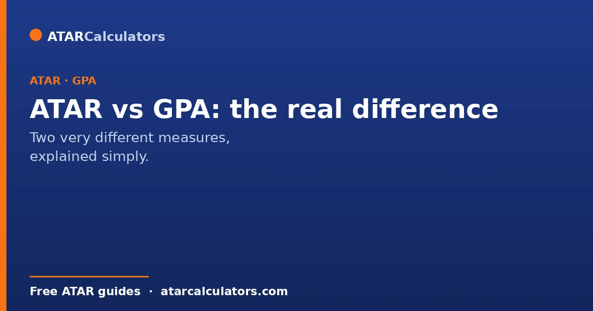
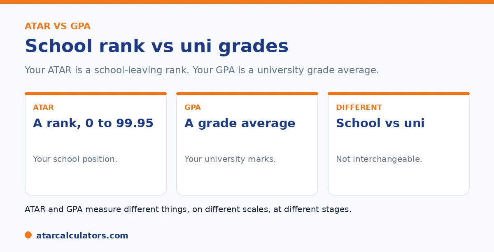

Here is the short version. Your ATAR is a rank, from 0.00 to 99.95, showing your position among Year 12 students nationally. Your GPA is a grade point average from your university results, on a scale like 7.0 or 4.0. So one measures your school-leaving rank, the other your university performance. They sit at different stages of your education and are not interchangeable.
ATAR and GPA both sum up academic performance in a single number, which is why they get mixed up. But they describe completely different things.
Below is the real difference. For an indicative comparison, use our ATAR to GPA converter.
Key takeaways
- Your ATAR is a rank, from 0.00 to 99.95.
- It shows your position among Year 12 students.
- Your GPA is a university grade average.
- It sits on a scale like 7.0 or 4.0.
- They measure different things, at different stages.
- They are not interchangeable.
What your ATAR is
Your ATAR, the Australian Tertiary Admission Rank, is a number from 0.00 to 99.95. It is a rank, not a mark. It shows where you sit compared with other Year 12 students. An ATAR of 90 means you are roughly in the top 10 per cent.

So the ATAR is about your position at the end of school. It is used for university entry, and once issued, it does not change.
What your GPA is
Your GPA, or grade point average, is a measure of your university performance. It converts your grades into points, then averages them, weighted by credit points. In Australia, common scales are 7.0, where High Distinction is 7, and the international 4.0 scale.
So a GPA is about how you perform at university, across your units. It builds up over your degree, and changes as you complete more study. See our guide on university grading.
The key difference
The core difference is what they measure, and when. Your ATAR is a school-leaving rank, fixed at the end of Year 12. Your GPA is a university grade average, built during your degree.
One ranks you against a cohort; the other averages your actual grades. Because they are different kinds of measure on different scales, you cannot cleanly convert one to the other. See our guide on whether you can convert ATAR to GPA.
It is worth unpacking that "different kinds of measure". This is because it explains why so many students are confused when the two numbers do not line up. An ATAR is a rank. A 90 means you finished ahead of 90% of your Year 12 cohort. And it says nothing about your actual marks, only your position. A GPA is an average. It takes your real university grades, converts each to grade points, and averages them. So it reflects how you performed against a fixed standard, not against other students. Those are fundamentally different questions, "where did I rank?" versus "what did I score?". That is why a high rank at school does not guarantee a high average at university, and vice versa. The scales differ too. The ATAR runs to 99.95, a GPA usually to 7. And the timing differs. Your ATAR is frozen the day results come out and never changes. Your GPA is a live number that moves with every unit you complete. Understanding that they answer different questions is the key to reading each one correctly and to not reading too much into the fact that they rarely match.
Want an indicative comparison?
Try the ATAR to GPA converter →Why the difference matters
The distinction matters because the two are used at different points. Your ATAR gets you into university. Your GPA, built once you are there, affects honours, postgraduate study, and some graduate jobs.
So a high ATAR opens the door, but your GPA is what you build afterward. They are both important, just at different stages. See our guide on whether a high ATAR predicts a high GPA.
ATAR is a rank, GPA is an average
The clearest way to see the difference is this: ATAR is a rank, and GPA is an average. Your ATAR tells you where you placed among Year 12 students, so it is inherently about comparison with others. Your GPA is the average of your own university grades, so it is about your own performance.
This is why the two are not interchangeable. A rank and an average answer different questions: one is “where did I finish in the group?” and the other is “how well am I doing in my studies?”
When each one matters
ATAR and GPA matter at different stages. Your ATAR matters for getting into university: it is used, alongside any adjustments, to decide admission. Once you are in, your ATAR stops mattering, and your GPA takes over as the measure of how you are performing.
So there is a hand-over. ATAR opens the door, and GPA is what counts once you are inside, for honours, postgraduate study, scholarships and graduate jobs. See how long GPA matters.
Does ATAR become your GPA?
No. Your ATAR does not carry over or transform into your GPA. They are separate measures, calculated in different ways at different times. When you start university, you begin building a GPA from scratch, based on your university grades alone.
So your Year 12 ATAR is not part of your university GPA. This is good news if your ATAR was lower than you hoped, and a reason not to coast if it was high: your GPA starts fresh either way.
Which matters more for jobs?
For most graduate jobs, GPA matters more than ATAR. Employers hiring university graduates look at your degree and your GPA, not your Year 12 rank, which by then is several years old and less relevant. Some competitive programs may glance at ATAR, but GPA and experience dominate.
So over time, your GPA outweighs your ATAR, and experience eventually outweighs both. Your ATAR fades quickly once you are at university and beyond.
The bottom line
The bottom line is that ATAR and GPA are not the same, and one does not become the other. ATAR is a rank that gets you into university; GPA is an average that measures how you do once you are there. They matter at different stages, and your GPA starts fresh.
So do not judge your GPA by your ATAR, or expect one to predict the other. A strong ATAR is a good start, and a modest one leaves plenty of room to earn a strong GPA through your own work at university.
Common questions
What is the difference between ATAR and GPA?
Your ATAR is a rank from 0.00 to 99.95 showing your position among Year 12 students. Your GPA is an average of your university grades, on a scale like 7.0 or 4.0. They measure different things, at different stages.
Is ATAR the same as GPA?
No. An ATAR is a school-leaving rank used for university entry, fixed at the end of Year 12. A GPA is a university grade average built during your degree. They are different kinds of measure on different scales.
Does ATAR become my GPA at university?
No. Your ATAR does not carry over as your GPA. Your GPA starts fresh and is built from your university grades. Your school-leaving rank and your university grade average are separate things.
Which matters more, ATAR or GPA?
They matter at different stages. Your ATAR gets you into university, while your GPA, built once you are there, affects honours, postgraduate study, and some graduate jobs. Both are important in their own context.
Can I compare my ATAR and GPA directly?
Not cleanly, because they are different measures on different scales. An ATAR ranks you among a cohort; a GPA averages your actual grades. Any direct comparison is rough and approximate, not a true equivalence.
See an indicative comparison
Explore how an ATAR loosely compares with a GPA scale. Indicative only.
Open the ATAR to GPA converter →Related guides
This guide is general information for students, not formal academic advice. ATAR and GPA measure different things on different scales, so there is no official conversion between them. Any figures here are approximate. For overseas applications, ask the specific institution for its needed conversion, or use a credential evaluation service. Grade scales also vary by university, so confirm with your own. The ATAR authority for your state is your admissions centre, such as UAC. Reviewed by the ATARCalculators Editorial Team.